2019 has been an exciting year exploring the Pacific Northwest. From Seattle to the Gorge to the Oregon Coast, I've seen so much and yet there is still so much left to see. Click the links above for a closer look at some of the adventures I've had!
I was lucky enough to visit Seattle twice this. I went up there in the Spring and got to explore Pike Place Market, the Space Needle, and ride the Ferris Wheel. Then, in the fall I visited again. I went to the Chihuly Museum, went up the Space Needle, and even caught an improv show. I can't wait for my next trip there!
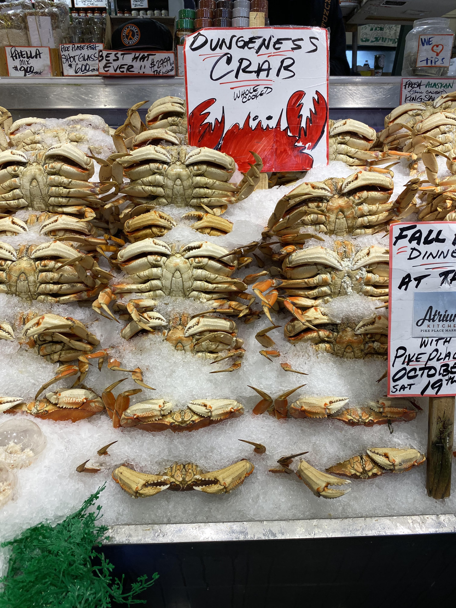 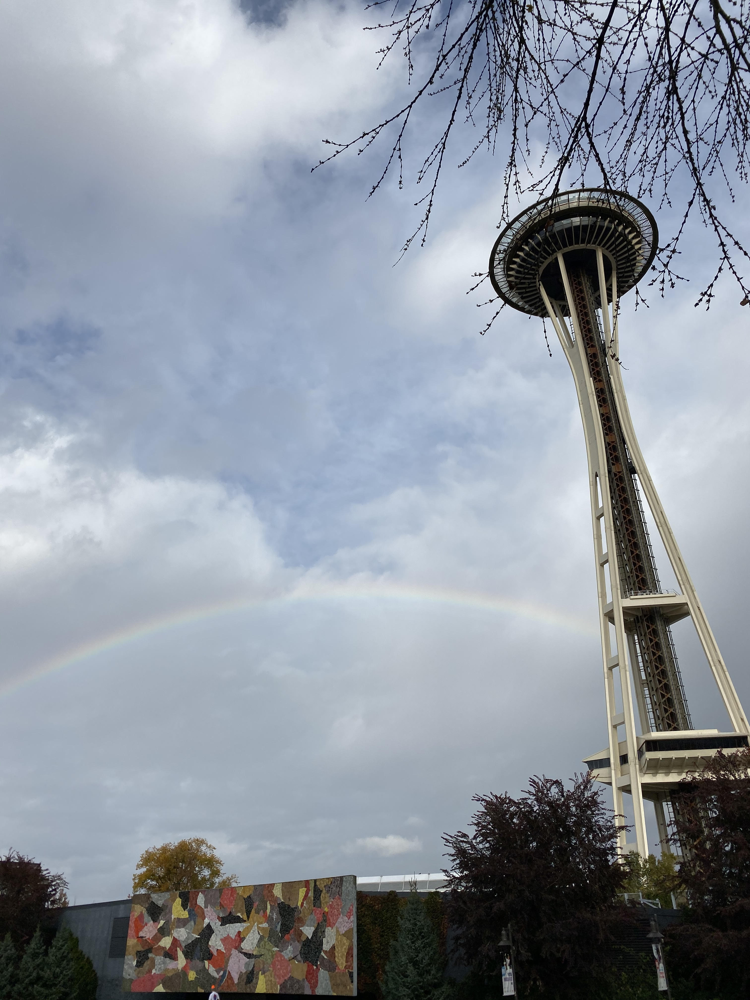 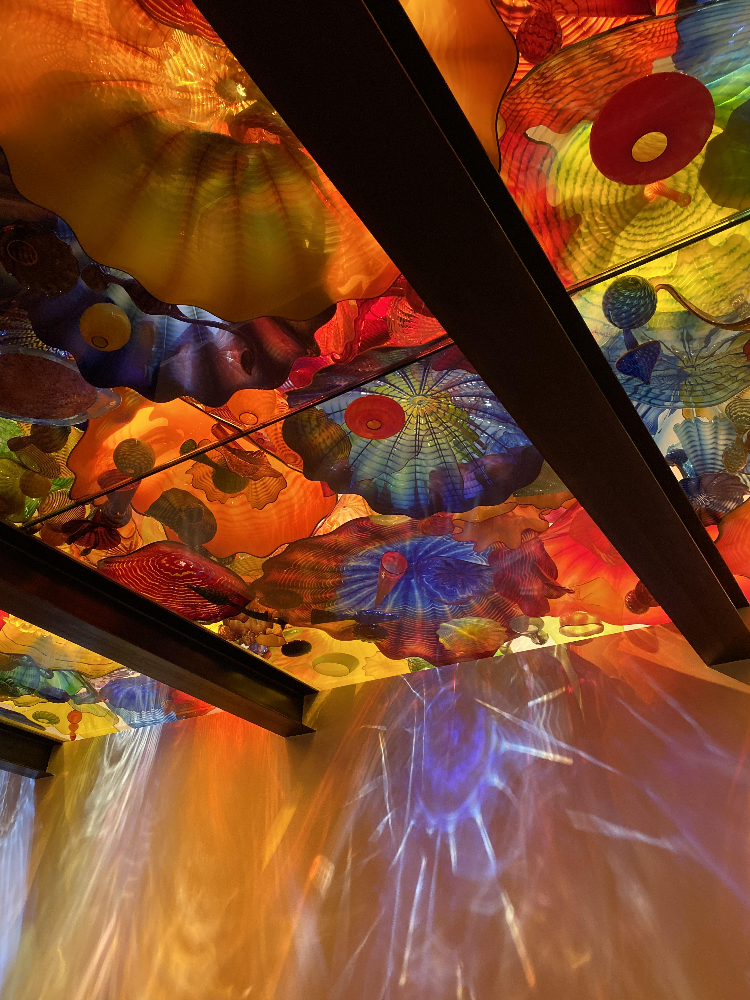 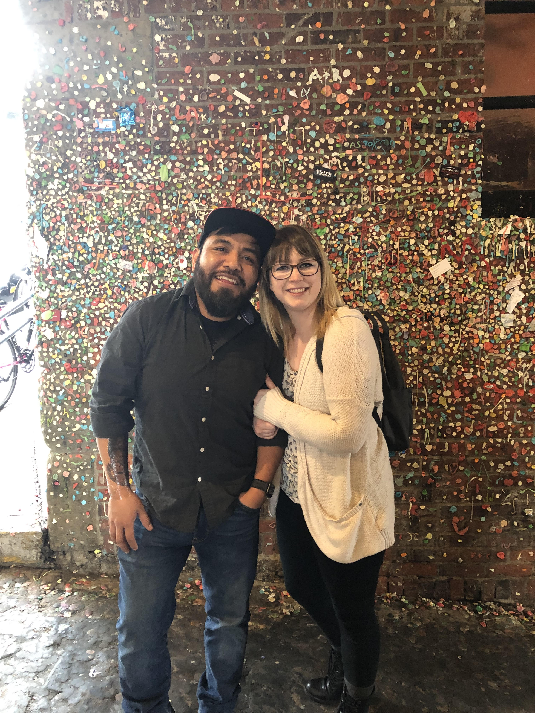The Oregon Coast has to be one of my favorite places to visit. There are so many cute little towns to see and the views are just spectacular. One of my favorite trips there this summer started off at a hidden marina where I had fresh crab and oysters. Then we ventured to the new Tillamook Visitor Center and tasted lots of cheese, and of course we didn't leave without getting ice-cream. We hiked down to a small lighthouse and saw the octopus tree. It was an awesome day trip to get out of the city!
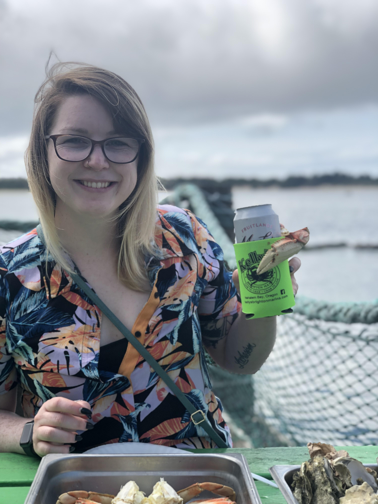 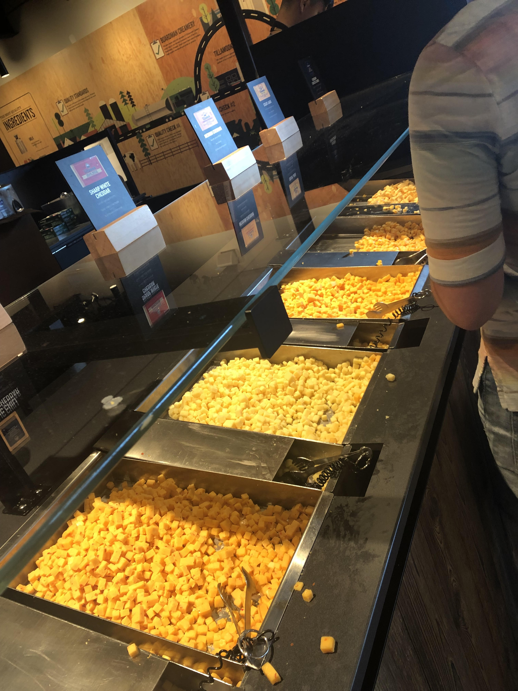 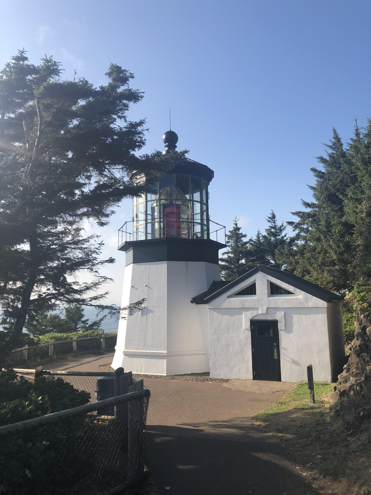 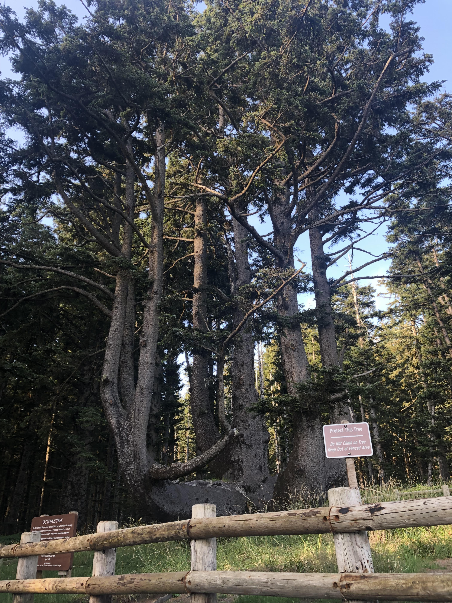After the devasting fires that destroyed so much of the gorge, it's been hard to go out there without being overcome by sadness at all the destruction. I ventured out once this summer to "chase" some waterfalls and took a side trip to the Vista House to see some of the new growth that has begun. It is so beautfiul out there, despite what happened. I feel so blessed to live so close to something this wonderful.
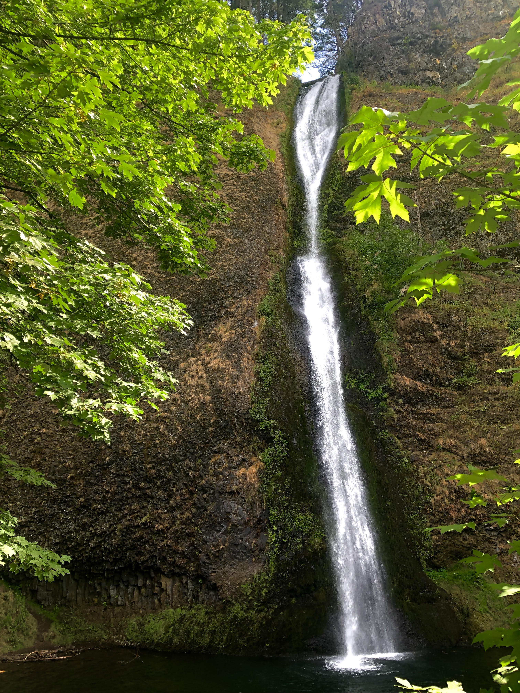 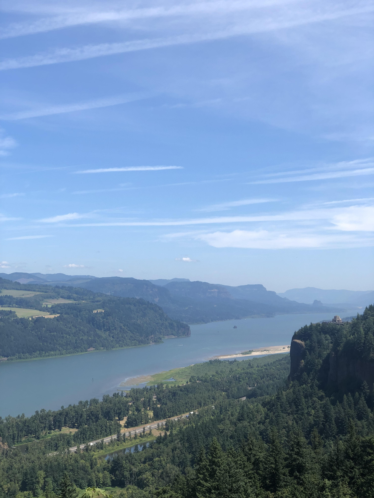 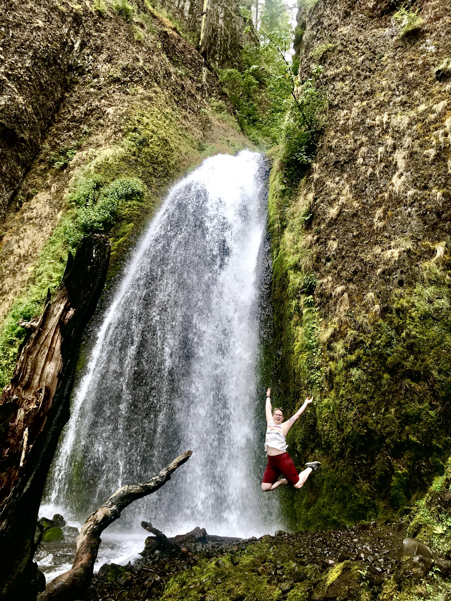To subscribe to updates on my adventures, fill out the form below!